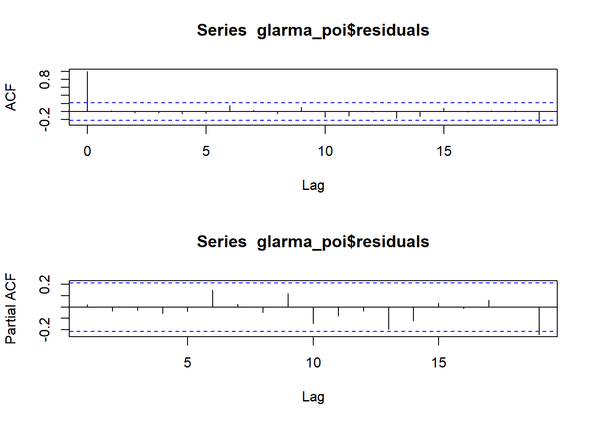
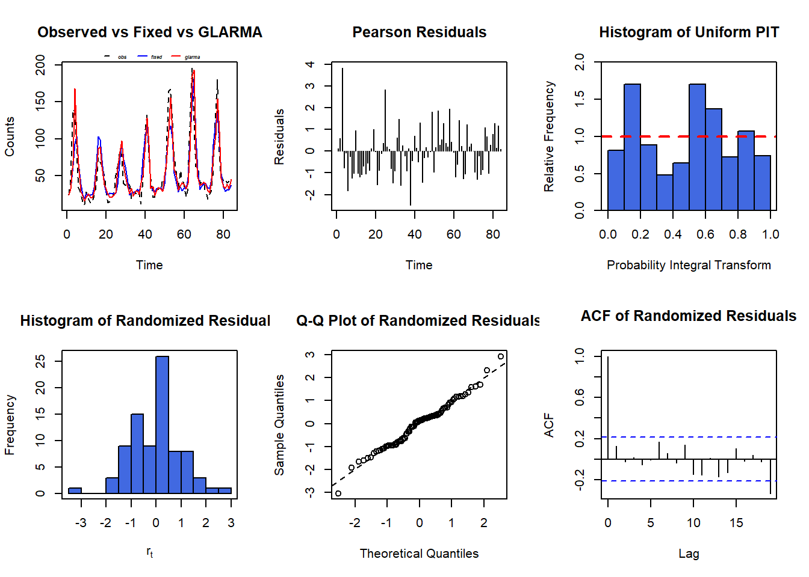
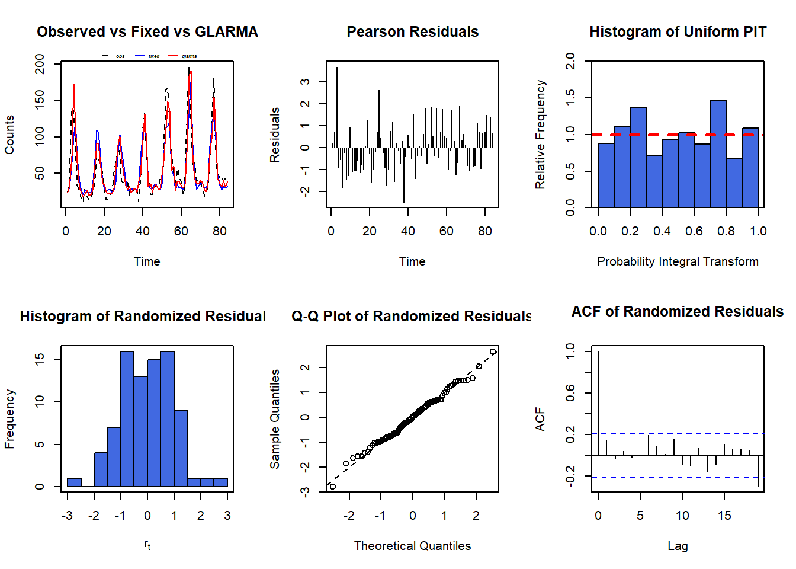
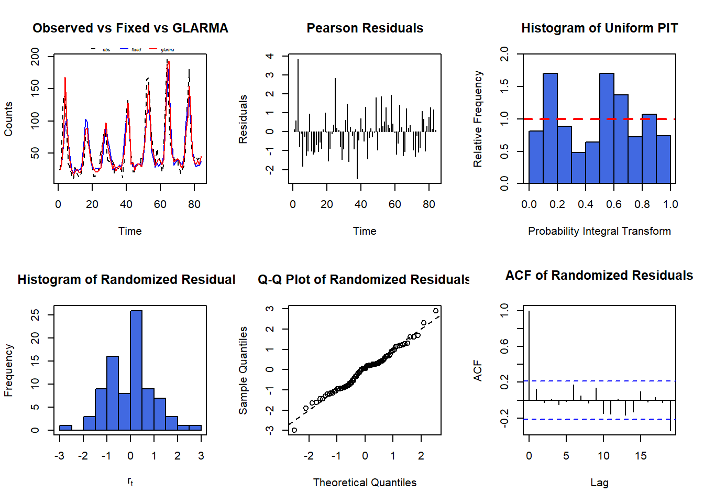
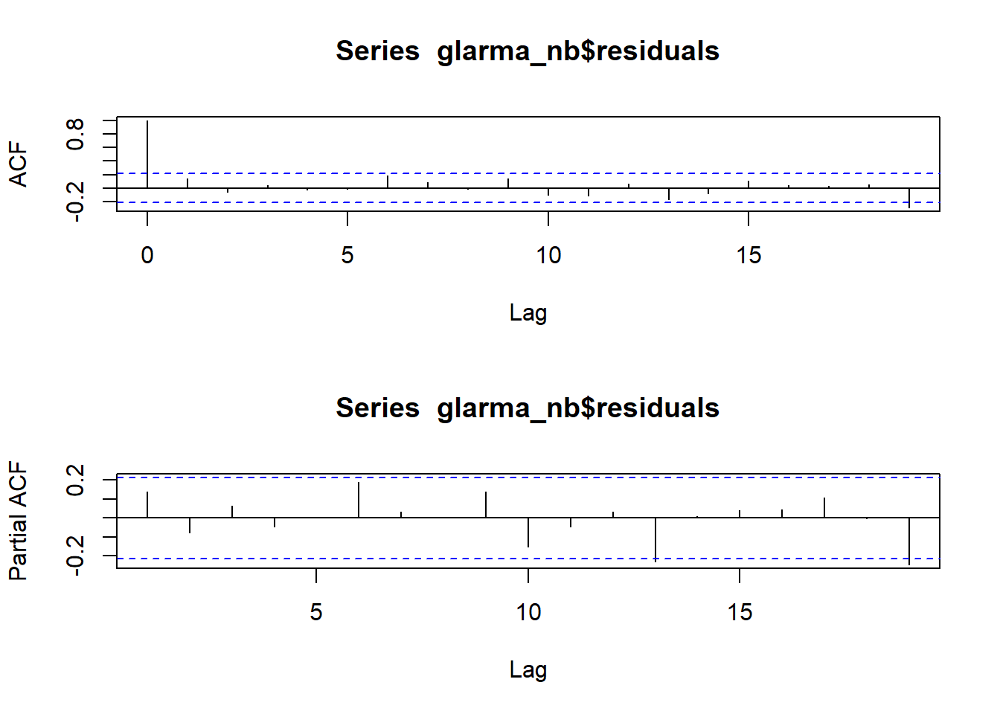
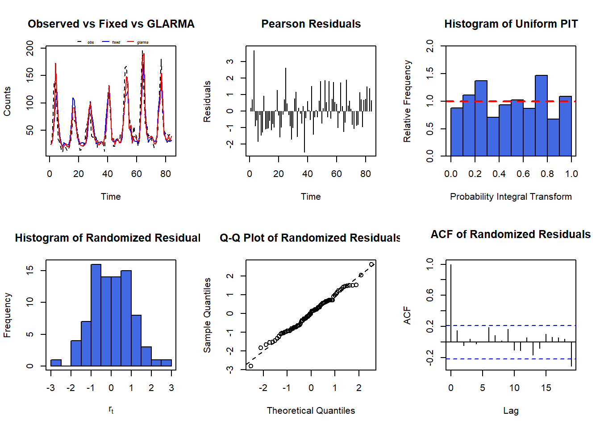

require(glarma)
require(performance)
require(kableExtra)
require(tidyverse)Untitled
Bibliotecas
Base de Dados
df <- read.delim("Data_CPDO.txt")Matrix of Correlation
require(Hmisc)Carregando pacotes exigidos: Hmisc
Anexando pacote: 'Hmisc'Os seguintes objetos são mascarados por 'package:dplyr':
src, summarizeOs seguintes objetos são mascarados por 'package:base':
format.pval, unitsa <- df[, 1:9]
matrix <- rcorr(as.matrix(a))
cor_matrix <- matrix$r
p_value_matrix <- matrix$P
cor_matrix[lower.tri(cor_matrix, diag = TRUE)] <- ""
p_value_matrix[lower.tri(p_value_matrix, diag = TRUE)] <- ""cor_matrix %>%
kable("html", align = "c") %>%
kable_styling()| bronq_aguda | CO | PM10 | NO | NO2 | NOX | O3 | Temp_min | RH | |
|---|---|---|---|---|---|---|---|---|---|
| bronq_aguda | 0.0323432810141658 | 0.0756939563571763 | 0.297721005846306 | -0.0271288307911392 | 0.18245089799302 | -0.348436360834819 | -0.147503841432864 | 0.109359895741852 | |
| CO | 0.150395505169633 | 0.102595870518991 | 0.153471436405583 | 0.141098015100781 | 0.0705832464671625 | -0.129452742871646 | 0.116940892551031 | ||
| PM10 | 0.470265202892027 | 0.294727543313694 | 0.449074960064434 | 0.366315194645902 | -0.444210236387916 | -0.520590928460985 | |||
| NO | 0.518064025162367 | 0.909032460101456 | -0.186500223569621 | -0.484465479347949 | -0.184498031508502 | ||||
| NO2 | 0.826639563204768 | 0.239468345698813 | -0.205333770787192 | -0.249814235591937 | |||||
| NOX | -0.0126237025596161 | -0.410682660455583 | -0.238506628340795 | ||||||
| O3 | -0.0416076775561365 | -0.56800320581987 | |||||||
| Temp_min | 0.479085422929526 | ||||||||
| RH |
p_value_matrix %>%
kable("html", align = "c") %>%
kable_styling()| bronq_aguda | CO | PM10 | NO | NO2 | NOX | O3 | Temp_min | RH | |
|---|---|---|---|---|---|---|---|---|---|
| bronq_aguda | 0.770236313565127 | 0.493764095978874 | 0.0059515516139339 | 0.806487924104706 | 0.0966916248868777 | 0.00116199965294816 | 0.18057863922756 | 0.322049180669552 | |
| CO | 0.172088198793251 | 0.353059677829768 | 0.16338248838001 | 0.20046661153902 | 0.523467526006617 | 0.240546364305547 | 0.289435253017851 | ||
| PM10 | 6.37303131445499e-06 | 0.00649902949122572 | 1.82972428215411e-05 | 0.000610362604302583 | 2.30840805004462e-05 | 3.85227497901042e-07 | |||
| NO | 4.48394607666103e-07 | 0 | 0.0893891178586657 | 3.01917433187526e-06 | 0.092943393326975 | ||||
| NO2 | 0 | 0.0282422382101319 | 0.0609669139552675 | 0.0219204252375538 | |||||
| NOX | 0.909262320520265 | 0.000104361487907489 | 0.0289012973958713 | ||||||
| O3 | 0.707073384795892 | 1.74993681767432e-08 | |||||||
| Temp_min | 4.02276326205708e-06 | ||||||||
| RH |
NO
y <- df[,1]
X1 <- as.matrix(df[,4])
Trend <- 1:84
Intercepto <- rep(1,84)
X1 <- cbind(Intercepto, Trend, X1, df$cos6, df$cos12, df$sen6, df$sen12)
colnames(X1) <- c("Intercepto", "Trend", "NO", "cos6", "cos12", "sen6", "sen12")GLARMA Poisson
glarma_poi <- glarma(y, X1, thetaLags = NULL, phiLags = 1, type = "Poi",
method = "FS", residuals= "Pearson",
maxit = 100, grad = 1e-6)summary(glarma_poi)
Call: glarma(y = y, X = X1, type = "Poi", method = "FS", residuals = "Pearson",
phiLags = 1, thetaLags = NULL, maxit = 100, grad = 1e-06)
Pearson Residuals:
Min 1Q Median 3Q Max
-4.475 -1.428 -0.130 1.112 8.618
GLARMA Coefficients:
Estimate Std.Error z-ratio Pr(>|z|)
phi_1 0.07613 0.00524 14.53 <2e-16 ***
Linear Model Coefficients:
Estimate Std.Error z-ratio Pr(>|z|)
Intercepto 3.175674 0.063969 49.644 < 2e-16 ***
Trend 0.007152 0.001026 6.972 3.12e-12 ***
NO 0.025515 0.002818 9.053 < 2e-16 ***
cos6 -0.111946 0.030222 -3.704 0.000212 ***
cos12 -0.403275 0.037764 -10.679 < 2e-16 ***
sen6 -0.374332 0.031790 -11.775 < 2e-16 ***
sen12 0.489579 0.035256 13.886 < 2e-16 ***
Null deviance: 2279.04 on 83 degrees of freedom
Residual deviance: 358.88 on 76 degrees of freedom
AIC: 837.7817
Number of Fisher Scoring iterations: 17
LRT and Wald Test:
Alternative hypothesis: model is a GLARMA process
Null hypothesis: model is a GLM with the same regression structure
Statistic p-value
LR Test 144.5 <2e-16 ***
Wald Test 211.1 <2e-16 ***
---
Signif. codes: 0 '***' 0.001 '**' 0.01 '*' 0.05 '.' 0.1 ' ' 1glarma_poi
Call: glarma(y = y, X = X1, type = "Poi", method = "FS", residuals = "Pearson",
phiLags = 1, thetaLags = NULL, maxit = 100, grad = 1e-06)
GLARMA Coefficients:
phi_1
0.0761298
Linear Model Coefficients:
Intercepto Trend NO cos6 cos12
3.175673916 0.007151945 0.025514542 -0.111945802 -0.403275442
sen6 sen12
-0.374332324 0.489578673
Degrees of Freedom: 83 Total (i.e. Null); 76 Residual
Null Deviance: 2279.037
Residual Deviance: 358.8828
AIC: 837.7817 par(mfrow = c(2, 1))
acf(glarma_poi$residuals)
pacf(glarma_poi$residuals)
par(mfrow=c(2,3))
plot(glarma_poi)
GLARMA Binomial Negativo
glarma_nb <- glarma(y, X1, thetaLags = NULL, phiLags = 1, type = "NegBin",
method = "FS", residuals= "Pearson",
maxit = 100, grad = 1e-6)summary(glarma_nb)
Call: glarma(y = y, X = X1, type = "NegBin", method = "FS", residuals = "Pearson",
phiLags = 1, thetaLags = NULL, maxit = 100, grad = 1e-06)
Pearson Residuals:
Min 1Q Median 3Q Max
-2.4856 -0.8947 -0.1203 0.5752 4.0168
Negative Binomial Parameter:
Estimate Std.Error z-ratio Pr(>|z|)
alpha 14.813 3.786 3.912 9.15e-05 ***
GLARMA Coefficients:
Estimate Std.Error z-ratio Pr(>|z|)
phi_1 0.22406 0.03985 5.623 1.88e-08 ***
Linear Model Coefficients:
Estimate Std.Error z-ratio Pr(>|z|)
Intercepto 3.180309 0.121089 26.264 < 2e-16 ***
Trend 0.008510 0.001942 4.382 1.18e-05 ***
NO 0.019641 0.006340 3.098 0.00195 **
cos6 -0.065614 0.060498 -1.085 0.27812
cos12 -0.454707 0.073249 -6.208 5.38e-10 ***
sen6 -0.315997 0.056916 -5.552 2.82e-08 ***
sen12 0.466171 0.063349 7.359 1.86e-13 ***
Null deviance: 361.607 on 83 degrees of freedom
Residual deviance: 98.288 on 75 degrees of freedom
AIC: 687.9201
Number of Fisher Scoring iterations: 100
LRT and Wald Test:
Alternative hypothesis: model is a GLARMA process
Null hypothesis: model is a GLM with the same regression structure
Statistic p-value
LR Test 25.22 5.11e-07 ***
Wald Test 31.62 1.88e-08 ***
---
Signif. codes: 0 '***' 0.001 '**' 0.01 '*' 0.05 '.' 0.1 ' ' 1glarma_nb
Call: glarma(y = y, X = X1, type = "NegBin", method = "FS", residuals = "Pearson",
phiLags = 1, thetaLags = NULL, maxit = 100, grad = 1e-06)
Negative Binomial Parameter:
alpha
14.81332
GLARMA Coefficients:
phi_1
0.2240552
Linear Model Coefficients:
Intercepto Trend NO cos6 cos12
3.180309455 0.008509826 0.019640992 -0.065613989 -0.454706605
sen6 sen12
-0.315996811 0.466171420
Degrees of Freedom: 83 Total (i.e. Null); 75 Residual
Null Deviance: 361.6072
Residual Deviance: 98.28788
AIC: 687.9201 par(mfrow = c(2, 1))
acf(glarma_nb$residuals)
pacf(glarma_nb$residuals)
par(mfrow=c(2,3))
plot(glarma_nb)
NOX
y <- df[,1]
X2 <- as.matrix(df[,6])
Trend <- 1:84
Intercepto <- rep(1,84)
X2 <- cbind(Intercepto, Trend, X2, df$cos6, df$cos12, df$sen6, df$sen12)
colnames(X2) <- c("Intercepto", "Trend", "NOX", "cos6", "cos12", "sen6", "sen12")GLARMA Binomial Negativo
glarma_nb <- glarma(y, X2, thetaLags = NULL, phiLags = 1, type = "NegBin",
method = "FS", residuals= "Pearson",
maxit = 100, grad = 1e-6)summary(glarma_nb)
Call: glarma(y = y, X = X2, type = "NegBin", method = "FS", residuals = "Pearson",
phiLags = 1, thetaLags = NULL, maxit = 100, grad = 1e-06)
Pearson Residuals:
Min 1Q Median 3Q Max
-2.4871 -0.9015 -0.0022 0.4446 3.8532
Negative Binomial Parameter:
Estimate Std.Error z-ratio Pr(>|z|)
alpha 14.990 3.509 4.272 1.94e-05 ***
GLARMA Coefficients:
Estimate Std.Error z-ratio Pr(>|z|)
phi_1 0.22132 0.04094 5.407 6.42e-08 ***
Linear Model Coefficients:
Estimate Std.Error z-ratio Pr(>|z|)
Intercepto 3.079970 0.140890 21.861 < 2e-16 ***
Trend 0.008068 0.002014 4.006 6.17e-05 ***
NOX 0.012800 0.003681 3.478 0.000506 ***
cos6 -0.052588 0.061898 -0.850 0.395549
cos12 -0.475997 0.073854 -6.445 1.16e-10 ***
sen6 -0.318841 0.057635 -5.532 3.16e-08 ***
sen12 0.500643 0.065389 7.656 1.91e-14 ***
Null deviance: 350.697 on 83 degrees of freedom
Residual deviance: 95.115 on 75 degrees of freedom
AIC: 688.6466
Number of Fisher Scoring iterations: 100
LRT and Wald Test:
Alternative hypothesis: model is a GLARMA process
Null hypothesis: model is a GLM with the same regression structure
Statistic p-value
LR Test 27.21 1.82e-07 ***
Wald Test 29.23 6.42e-08 ***
---
Signif. codes: 0 '***' 0.001 '**' 0.01 '*' 0.05 '.' 0.1 ' ' 1glarma_nb
Call: glarma(y = y, X = X2, type = "NegBin", method = "FS", residuals = "Pearson",
phiLags = 1, thetaLags = NULL, maxit = 100, grad = 1e-06)
Negative Binomial Parameter:
alpha
14.99008
GLARMA Coefficients:
phi_1
0.2213212
Linear Model Coefficients:
Intercepto Trend NOX cos6 cos12
3.079969580 0.008068487 0.012800074 -0.052588087 -0.475996875
sen6 sen12
-0.318841414 0.500642978
Degrees of Freedom: 83 Total (i.e. Null); 75 Residual
Null Deviance: 350.697
Residual Deviance: 95.1151
AIC: 688.6466 par(mfrow = c(2, 1))
acf(glarma_nb$residuals)
pacf(glarma_nb$residuals)
par(mfrow=c(2,3))
plot(glarma_nb)
NO e NOX
y <- df[,1]
X1 <- as.matrix(df[,4])
X2 <- as.matrix(df[,6])
Trend <- 1:84
Intercepto <- rep(1,84)
X3 <- cbind(Intercepto, Trend, X1, X2, df$cos6, df$cos12, df$sen6, df$sen12)
colnames(X3) <- c("Intercepto", "Trend", "NO", "NOX", "cos6", "cos12", "sen6", "sen12")GLARMA Binomial Negativo
glarma_nb <- glarma(y, X3, thetaLags = NULL, phiLags = c(1,6) , type = "NegBin",
method = "FS", residuals= "Pearson",
maxit = 100, grad = 1e-6)summary(glarma_nb)
Call: glarma(y = y, X = X3, type = "NegBin", method = "FS", residuals = "Pearson",
phiLags = c(1, 6), thetaLags = NULL, maxit = 100, grad = 1e-06)
Pearson Residuals:
Min 1Q Median 3Q Max
-2.5004 -0.8749 -0.0656 0.6628 3.6807
Negative Binomial Parameter:
Estimate Std.Error z-ratio Pr(>|z|)
alpha 13.874 3.968 3.496 0.000472 ***
GLARMA Coefficients:
Estimate Std.Error z-ratio Pr(>|z|)
phi_1 0.24536 0.03831 6.405 1.51e-10 ***
phi_6 0.06293 0.02860 2.200 0.0278 *
Linear Model Coefficients:
Estimate Std.Error z-ratio Pr(>|z|)
Intercepto 3.166752 0.128693 24.607 < 2e-16 ***
Trend 0.006369 0.001885 3.379 0.000727 ***
NO -0.009453 0.021508 -0.440 0.660298
NOX 0.015777 0.011225 1.405 0.159875
cos6 -0.008532 0.069513 -0.123 0.902315
cos12 -0.498126 0.071081 -7.008 2.42e-12 ***
sen6 -0.342601 0.056792 -6.033 1.61e-09 ***
sen12 0.491471 0.066982 7.337 2.18e-13 ***
Null deviance: 361.68 on 83 degrees of freedom
Residual deviance: 101.05 on 73 degrees of freedom
AIC: 693.375
Number of Fisher Scoring iterations: 100
LRT and Wald Test:
Alternative hypothesis: model is a GLARMA process
Null hypothesis: model is a GLM with the same regression structure
Statistic p-value
LR Test 23.69 7.16e-06 ***
Wald Test 43.36 3.84e-10 ***
---
Signif. codes: 0 '***' 0.001 '**' 0.01 '*' 0.05 '.' 0.1 ' ' 1glarma_nb
Call: glarma(y = y, X = X3, type = "NegBin", method = "FS", residuals = "Pearson",
phiLags = c(1, 6), thetaLags = NULL, maxit = 100, grad = 1e-06)
Negative Binomial Parameter:
alpha
13.87369
GLARMA Coefficients:
phi_1 phi_6
0.24536126 0.06293111
Linear Model Coefficients:
Intercepto Trend NO NOX cos6
3.166751808 0.006368809 -0.009452925 0.015776519 -0.008531907
cos12 sen6 sen12
-0.498126393 -0.342601292 0.491471337
Degrees of Freedom: 83 Total (i.e. Null); 73 Residual
Null Deviance: 361.6787
Residual Deviance: 101.0469
AIC: 693.375 par(mfrow = c(2, 1))
acf(glarma_nb$residuals)
pacf(glarma_nb$residuals)
par(mfrow=c(2,3))
plot(glarma_nb)